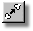
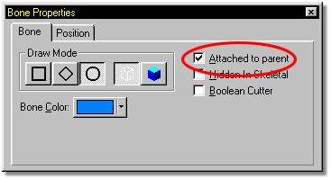

Creating an Inverse Kinematic chain requires that multiple bones be connected end to end, forming a hierarchical chain. To attach two bones, select the child bone by clicking on it with the mouse, then click the Attach button on the Tool Panel, or check the “Attached to Parent” box on the Bone Properties Panel. While adding bones, they can be connected automatically by adding the child bone starting on the small end of a Parent bone.

Attaching bones to one another creates a kinematic chain. Figure 1 shows a Vase model with the default bone.

Figure 1
Figure 2 shows two additional bones that were added. One in line with the default, and a second bone off center of the previous.

Figure 2
To attach the two bones, select the bone to be attached by clicking on it in the Bone window, or the Project Workspace (the handles will turn yellow). Click the Attach button on the Tool Panel, or check the “Attached to Parent” box on the General Tab of the Properties Panel (Figure 3a). The large end of the bone will attach to the parent bone and reposition automatically. Figure 3 shows the model after attaching the bone.

Figure 3

Figure 3a
When the point that both bones have in common is moved, both bones will move accordingly.
Add Bone
Detach Bone
Delete Bone
Group
Lasso